A complete list of all resources used in the completion of this project including but not limited to :
[Images]
[Research Sources]
[Validation]
- 5 reasons art is good for you, the soul, and the world. (2016, October 23). Retrieved February 03, 2021, from https://obxartstudio.com/5-reasons-art-good-soul-world/
- 500+ Virgo Facts ideas IN 2021: Virgo Facts, VIRGO, VIRGO quotes. (2021, January 05). Retrieved from https://www.pinterest.ca/skmccurdy/virgo-facts/
- Css reference. (n.d.). Retrieved February 03, 2021, from https://www.w3schools.com/cssref/default.asp
- Machado, B. (2015, May 12). Photo by Breno Machado on Unsplash. Retrieved January, from https://unsplash.com/photos/in9-n0JwgZ0
- Prιnceѕѕιcнιgo. (2021, January 06). 【Text dividers + Headers】: Army's Amino. Retrieved from https://aminoapps.com/c/btsarmy/page/blog/text-dividers-headers/qkwD_qkLFRu5BDXo863wZn7Wnk582Ngn0mR
- Set the opacity only to background color not on the text in css. (2018, December 04). Retrieved February 03, 2021, from https://www.geeksforgeeks.org/set-the-opacity-only-to-background-color-not-on-the-text-in-css/#:~:text=To%20set%20the%20opacity%20only,inside%20it%20fully%20transparent%20element
- Virgo facts: Fun and interesting qualities Of VIRGO SIGN. (n.d.). Retrieved from https://www.ganeshaspeaks.com/zodiac-signs/virgo/facts/
- Year of the dog - Chinese Zodiac dog. (2014, January 09). Retrieved from http://www.chinesezodiac.com/dog.php
- Year of the dog. (n.d.). Retrieved February 03, 2021, from https://www.chinahighlights.com/travelguide/chinese-zodiac/dog.htm